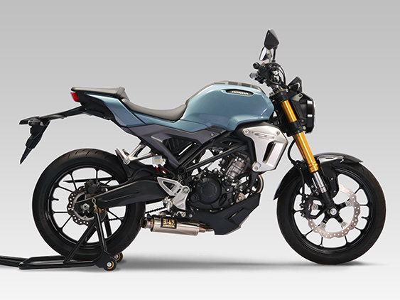
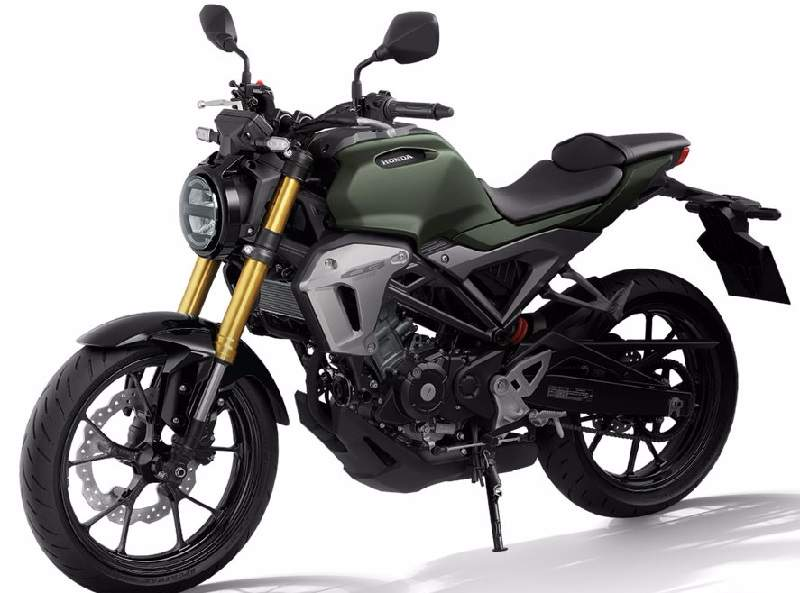

The Features Of Honda CB 150R Exmotion


Specification: Honda CB150R Exmotion
- Details
- Price: 5,50,000 BDT
- CC Category: 150 cc
- Category: Naked Sports
- Product Availability: Unofficially Available
- Engine & Transmission
- Displacement: 149 cc
- Max Power: 20 HP
- Max Torque: 14.50 NM
- BORE x STROKE: 57.3 mm x 57.8 mm
- Gears: 6
- Compression Ratio: 11.3: 1
- Clutch: Multiplate Wet Clutch
- Engine Cooling: Liquid Cooled
- Fuel Supply: PGM-FI
- Starting Method: Electric Starter
- Transmission Type: Manual
- Dimensions
- Fuel Tank Capacity: 8.5L
- Ground Clearance: 139 mm
- Height: 1053 mm
- Overall Length: 1973 mm
- Overall Width: 822 mm
- Weight: 123 Kg
- Wheelbase: 1296 mm
- Brakes, Wheels & Suspensions
- Braking: Dual Channel ABS
- Chassis : Diamond Frame
- Front Brake: 296 mm Single Disc
- Front Suspension: 41 mm Telescopic Upside Down Forks
- Front Tyre: 110/70-17 M/C 54H
- Rear Brake: 220 mm Single Disc
- Rear Suspension: Monoshock
- Rear Tyre: 150/60-17 M/C 66H
- Tyre Type: Tubeless
- Wheel Type: Alloy
- Top Speed and Mileage
- Mileage (Average): 35 Kmpl+ (Approx)
- Top Speed: 135 Kmph (Approx)
- Electricals
- Battery: Maintenance Free
- Headlight: LED
- Indicators: LED
- Tail Light: LED
- Features
- Engine Kill Switch: Yes
- Handle Type: Rod Handle Bar
- Odometer: Digital
- RPM Meter: Digital
- Seat type: Split
- Speedometer: Digital
HOME
Color
Contact us